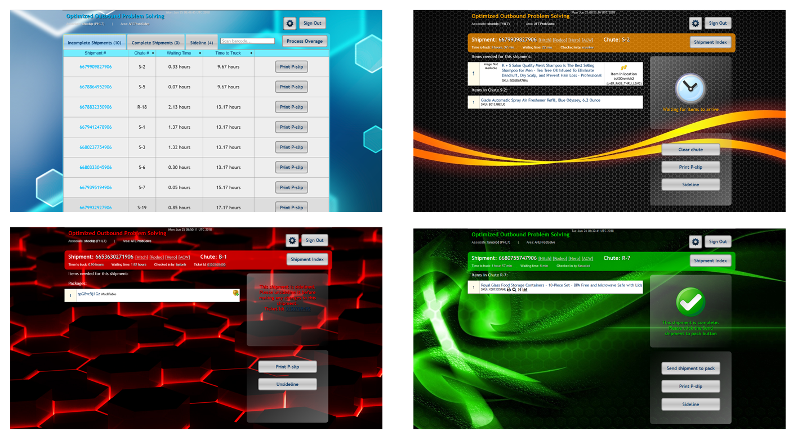
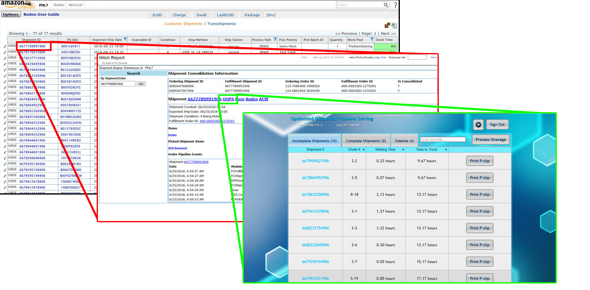
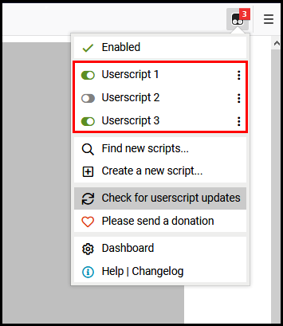
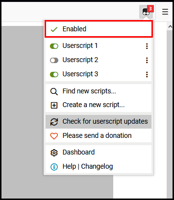
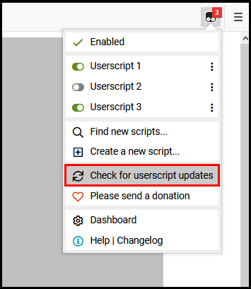

Amazon Problem Solve Enhancments
Amazon Problem Solve Enhancments
Contents |
TamperMonkey "allows you to customize the way a web page displays or behaves, by using small bits of JavaScript." It is a Firefox extension that enables people to change web pages that they don't control.
Like anything else you load on your system, TamperMonkey can be used against you. Don't load scripts onto your system unless you trust the source.
WARNING:
|
What do the scripts do?
...and how do I get them?
In the following tables you'll find the scripts that you can install to enhance your experience. First you'll need to
After you've installed TamperMonkey, you can pick and choose the scripts you'd like to add, or choose to install all of them at once.
| Problem Solve Scripts | ||
|---|---|---|
| Description | Script Name | |
| Changes color scheme based on time out to truck. <1hr to truck = red, >1hr to truck = orange, and completed non-CPTs = green.  | OOPS Enhancement Suite | |
| From Rodeo, ShipmentIDs will link straight to OOPS and FN SKUs will link straight to FCResearch, comletely bypassing having to go into Hitch first.  | Bypass Hitch | |
| QHUD Only | ||
|---|---|---|
| Description | Script Name | |
| Fits the Audit center table on the page so you don't have to scroll over in order to submit audits. | Audit Center Pro | |
What if I run into problems?
Again, these scripts are not officially supported by Amazon. The best you can do is check for updates, and if the problem isn't already fixed, reach out to shocklp.
|
To disable individual scripts, click the TamperMonkey logo and uncheck each script you wish to disable.  |
To disable TamperMonkey entirely, you can click the TamperMonkey logo in the top right of your browser and select enable/disable.  |
To check for updates to the scripts you have installed, click on the Tamper Monkey logo located in the upper right hand of your browser window and click 'Check for userscript updates' in the menu that appears.
